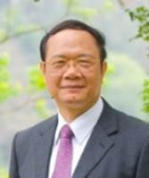
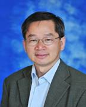
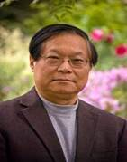

NVMSA 2017 Technical Program
|
Time |
August 16 (Wed.) |
August 17 (Thu.) |
August 18 (Fri.) |
|
08:00 - 08:30 |
Registration |
|
|
|
08:30 - 08:45 |
Registration |
Registration |
|
|
08:45 - 09:00 |
NVMSA Opening Remark & Keynote [201] |
||
|
09:00 - 10:00 |
RTCSA/NVMSA Joint Keynote I [100] |
RTCSA/NVMSA Joint Keynote II [100] |
|
|
10:00 - 10:30 |
Coffee Break |
Coffee Break |
Coffee Break |
|
10:30 - 12:00 |
[201] |
[201] |
[201] |
|
12:00 - 13:30 |
Lunch |
Lunch |
Lunch |
|
13:30 - 15:00 |
[201] |
|
[201] |
|
15:00 - 15:30 |
Coffee Break |
Coffee Break |
|
|
15:30 - 17:00 |
[201] |
[201] |
|
|
17:00 - 18:00 |
|
Conference Closing |
|
|
18:00 - 21:00 |
Welcome
Reception & [2F, Landis Inn Chuhu] |
Conference
Banquet & [2F, Landis Inn Chuhu] |
|
===============================================================================
August 16 (Wednesday)
===============================================================================
NVMSA Opening Remark & Keynote (08:45 - 10:00) [Room 201]
Title: Enabling Technologies for the Internet of Things
Speaker: Professor Wen-Tsuen Chen, Academia Sinica, Taiwan
Abstract:
Emerging technologies and applications for Internet of Things (IoT) have progressed tremendously in recent years. IoT is considered as one of the most important components of future Internet. Things will be given computation and communication capabilities to enable intelligent interactions between human and things, among themselves, and to autonomously take safe and urgent actions according to environmental changes. A new age of applications with efficiency, safety, and sustainability is coming with the aids of comprehensive sensing from intelligent sensors, intelligent computation from cloud computing, and ubiquitous communications from mobile networks. Internet of Things has found many applications in environmental monitoring, energy saving, transportation safety, and health care etc. Enabling technologies in sensing and wireless communications will be presented in this talk. Future opportunities and challenges on the Internet of Things will be addressed.
Biography:
 Dr. Chen received his B.Sc. degree (1970) in nuclear engineering at the National Tsing Hua University, and his M.Sc. degree (1973) and Ph.D. degree (1976) in electrical engineering and computer sciences at the University of California, Berkeley. He has joined the National Tsing Hua University since 1976 and is currently a Distinguished Chair Professor of the Department of Computer Science and a Lifelong National Chair of the Ministry of Education. He has served as Department Chairman, the founding Director of the Computer and Communication Research Center, the founding Dean of College of Electrical Engineering & Computer Science, and the Vice Chancellor (in Research) of the University System of Taiwan, an alliance of four premier research universities in northern Taiwan. Dr. Chen has also served as science and technology advisor and the Director of the Science & Technology Advisory Office, Ministry of Education, Taiwan. From 2006 to 2010, he was the President of National Tsing Hua University. In March 2012, he joined the Academia Sinica as a Distinguished Research Fellow of the Institute of Information Science.
Dr. Chen has served as consultant and advisor in various levels of Taiwan government and industrial research organizations including Ministry of Economic Affairs, Institute for Information Industry, and Industrial Technology Research Institute. From 1990 for 14 years, he served as co-chairman and chairman of the technical evaluation committee of the industrial technology research grants program of the Ministry of Economic Affairs, which is recognized as one of the most successful programs in advancing industrial technologies in Taiwan. From July 2006 for 4 years, he was a science and technology advisor of the Executive Yuan of Taiwan. Starting in January 2011, he is the Program Director of the National Program for Intelligent Electronics of the National Science Council, aiming at developing advanced and innovative industrial technologies for bio-medical, green, automotive, and ICT electronics.
Dr. Chen's early research work was on software engineering. He pioneered the design of computer networks and parallel systems in early 1980s. His current research interests include intelligent sensing and applications, mobile computing, and high-speed communication networks. He has received numerous awards for his achievements in software engineering, computer networking and parallel processing, including Outstanding Research Awards of the National Science Council, Academic Award and National Chair of the Ministry of Education, and Technical Achievement Award and Taylor L. Booth Education Award of the IEEE Computer Society. Dr. Chen has served as Editor and Editor-in-Chief of the Journal of Information Science and Engineering of the Institute of Information Science, Academia Sinica. He was the founding General Chair of the IEEE International Conference on Parallel and Distributed Systems and the General Chair of the 2000 IEEE International Conference on Distributed Computing Systems among others. He is an IEEE Fellow and a Fellow of the Chinese Society for Management of Technology.
Session 1 - Full Papers I (10:30 - 12:00) [Room 201]
Chair: Ming-Chang Yang, the Chinese University of Hong Kong, Hong Kong
1.1 Energy-Efficient SQL Query Exploiting RRAM-based Process-in-Memory Structure (10:30-11:00) [Best Paper Award & Invited to ACM TOS Special Issue on NVM and Storage]
Yuliang Sun, Tsinghua University, China
Yu Wang, Tsinghua University, China
Huazhong Yang, Tsinghua University, China
1.2 A Novel ReRAM-based Processing-in-Memory Architecture for Graph Computing (11:00-11:30) [Best Paper Nomination & Invited to ACM TOS Special Issue on NVM and Storage]
Lei Han, the Hong Kong Polytechnic University, Hong Kong
Zhaoyan Shen, the Hong Kong Polytechnic University, Hong Kong
Zili Shao, the Hong Kong Polytechnic University, Hong Kong
H. Howie Huang, George Washington University, USA
Tao Li, University of Florida, USA
1.3 A Quantization-aware Regularized Learning Method in Multi-level Memristor-based Neuromorphic Computing System (11:30-12:00)
Chang Song, University of Pittsburgh, USA
Beiye Liu, University of Pittsburgh, USA
Wei Wen, University of Pittsburgh, USA
Hai Li, Duke University, USA
Yiran Chen, Duke University, USA
Session 2 - Invited Talks I (13:30 - 15:00) [Room 201]
Title: Software Stack for Byte-Addressable NVRAM
Chair: Chun Jason Xue, City University of Hong Kong, Hong Kong
Description:
In this session, we present 5 results that are the outcome of a 5 year, multi-million dollar project supported by the Ministry of Trade, Industry and Energy of the Korean government under the project title of Embedded System Software Development for NVRAM based Smart Devices and lead by Professor Youjip Won of Hanyang University as PI. Participants of this project included teams from Hanyang University, UNIST, Seoul National University, Kwangwoon University, Ewha University and 4 companies including Samsung Electronics. The key common goal of this project was exploring the potential benefits of nonvolatile RAM (NVRAM), in particular, within the embedded system domain. The participants investigated the various layers of the software stack from hardware platform, to system software, to applications with the goal of optimizing each layer for use with NVRAM and to create potential new killer applications that were not possible or difficult to provide with conventional systems. Presentations in this session will discuss some of the results that the participating institutions developed.
2.1 An FPGA-based Platform for Non Volatile Memory Emulation (13:30-13:45)
Taemin Lee, Seoul National University, South Korea (Speaker)
Sungjoo Yoo, Seoul National University, South Korea
2.2 Designing Persistent Heap for Byte Addressable NVRAM (13:45-14:00)
Taeho Hwang, Hanyang University, South Korea (Speaker)
Dokeun Lee, Hanyang University, South Korea
Yeonjin Noh, Hanyang University, South Korea
Youjip Won, Hanyang University, South Korea
2.3 FSL: Fast System Launch through Persistent Computing with Nonvolatile Memory (14:00-14:15)
Hyeonho Song, UNIST, South Korea (Speaker)
Sam H. Noh, UNIST, South Korea
2.4 A Fast Profiler for Compilation of Multi-Threaded Applications on a Hybrid Memory System (14:15-14:30)
Thomas Haywood Dadzie, Hanyang University, South Korea (Speaker)
SeungPyo Cho, Hanyang University, South Korea
Hyunok Oh, Hanyang University, South Korea
2.5 How to Improve the Performance of Browsers with NVRAM (14:15-14:45)
Kyusik Kim, Kwangwoon University, South Korea (Speaker)
Seungkyu Hong, Kwangwoon University, South Korea
Seongmin Kim, Kwangwoon University, South Korea
Taeseok Kim, Kwangwoon University, South Korea
Session 3 - Short Papers I (15:30 - 17:00) [Room 201]
Chair: Po-Chun Huang, National Taipei University of Technology, Taiwan
3.1 On-line Memory Defragmentation for NVM-based Persistent Heaps (15:30-16:00)
Lin Li, University of Electronic Science and Technology of China, China
Wei Jiang, University of Electronic Science and Technology of China, State Key Lab of Mathematical Engineering and Advanced Computing, China
Rui Pan, University of Electronic Science and Technology of China, China
Jinyu Zhan, University of Electronic Science and Technology of China, China
Zili Shao, the Hong Kong Polytechnic University, Hong Kong
Xiankui Xiong, Zhongxing Telecommunication Equipment Corporation, China
3.2 Nonvolatile Power Gating with MTJ based nonvolatile Flip-Flops for a microprocessor (16:00-16:30)
Masaru Kudo, Shibaura Institute of Technology, Japan
Kimiyoshi Usami, Shibaura Institute of Technology, Japan
3.3 Advanced Performance Improvement Algorithms for Emerging Resistive Memory: CBRAM Case Study (16:30-17:00)
Tinish Bhattacharya, Indian Institute of Technology Delhi, India
Supriya Chakraborty, Indian Institute of Technology Delhi, India
Manan Suri, Indian Institute of Technology Delhi, India
Poster Session (18:00 - 20:00) [2F, Landis Inn Chuhu]
Chair: Chien-Chung Ho, National Chung Cheng University, Taiwan
P.1 An NVM Block Device for Accelerating Block Device File System
Weitong Jin, Shanghai Jiao Tong University, China
Yanmin Zhu, Shanghai Jiao Tong University, China
Linpeng Huang, Shanghai Jiao Tong University, China
P.2 The New PCIe NVM device with Asymmetric Read/Write Interface
Dejiao Niu, Jiangsu University, China
Tao Cai, Jiangsu University, China
Yeqing Zhu, Jiangsu University, China
Hang Zhang, Jiangsu University, China
Yongzhao Zhan, Jiangsu University, China
Jun Liang, Jiangsu University, China
P.3 High-Memory-Bandwidth, Low-power and Persistent Memory Applications with Voltage-Control Spintronics MRAM (VoCSM)
Shinobu Fujita, Toshiba Corporation, Japan
Satoshi Takaya, Toshiba Corporation, Japan
Kazutaka Ikegami, Toshiba Corporation, Japan
Naoharu Shimomura, Toshiba Corporation, Japan
Hiroaki Yoda, Toshiba Corporation, Japan
Atushi Kurobe, Toshiba Corporation, Japan
P.4 A Highly Efficient I/O-based Out-of-Core Stencil Algorithm with Globally Optimized Temporal Blocking
Hiroko Midorikawa, Seikei University, Japan
Hideyuki Tan, Seikei University, Japan
===============================================================================
August 17 (Thursday)
===============================================================================
RTCSA/NVMSA Joint Keynote I (09:00 - 10:00) [Room 100]
Title: Will AI and IOT Make Semiconductor Memories Great Again?
Speaker: Professor Cheng-Wen Wu, National Tsing Hua University, Taiwan
Abstract:
The global semiconductor business over the past thirty years shows an encouraging trend of growth in general, with only a few glitches that did not hinder the long-term trend. The growing trend, however, slows down in recent years with the saturating smartphone market, until late 2016 when AI suddenly gave everybody new hope. Meanwhile, the Internet-of-Things (IOT) has long been identified, or expected, as the main driving force of growth for many industries in the future. Unfortunately, so far IOT is not giving a great boost to the semiconductor industry, due to limitations in global economy and energy consumption. What, then, are the specific problems and challenges to semiconductors? If IOT is going to give a boost to the stagnant semiconductor industry, what will be the key factors of its success? Is it AI? In my speech, I will try to address these issues, and propose the Symbiotic System Model (SSM) for developing IOT devices and systems. I will also give my observations on the role of semiconductor memories in the AI/IOT era. This speech is meant for triggering more research activities regarding establishing a sound IOT platform that allows heterogeneous integration of technologies and partners to migrate certain industries based on the notion of IOT.
Biography:
 Cheng-Wen Wu received the BSEE degree from National Taiwan University in 1981, and the MS and PhD degrees in ECE from UCSB in 1985 and 1987, respectively. Since 1988, he has been with the Department of EE, National Tsing Hua University (NTHU), Hsinchu, Taiwan, where he is currently a Tsing Hua Distinguished Chair Professor. He has served in the past at NTHU as the Director of Computer Center, Chair of EE Department, Director of IC Design Technology Center, Dean of the College of EECS, and Senior Vice President for Research. When he was on leave from NTHU from 2007 to 2014, he served at ITRI as the General Director of the SOC Technology Center, and the Vice President and General Director of the Information and Communications Labs. Dr. Wu received the Distinguished Teaching Awards (twice) from NTHU, the Outstanding Electrical Engineering Professor Award from the Chinese Institute of Electrical Engineers (CIEE), the Distinguished Research Awards (three times) from National Science Council, the Industrial Collaboration Awards (twice) from the Ministry of Education (MOE), the Academic Award from the Ministry of Education (MOE), the National Endowed Chair Professorship from MOE, the EE Medal (highest honor) from CIEE, etc. His current research interests include test and repair of semiconductor memories, and design and test of symbiotic IOT devices and systems. He is a life member of the CIEE, a life member of Taiwan IC Design Society, a Fellow of the ROC Technology Management Society, and a Fellow of the IEEE.
Session 4 - Full Papers II (10:30 - 12:00) [Room 201]
Chair: Jingtong Hu, University of Pittsburgh, USA
4.1 Downsampling of Time-series Data for Approximated Dynamic Time Warping on
Nonvolatile Memories (10:30-11:00) [Best Paper Nomination]
Xingni Li, Chongqing University, Chongqing, China
Yi Gu, Chongqing University, Chongqing, China
Po-Chun Huang, Yuan Ze University, Taoyuan, Taiwan
Duo Liu, Chongqing University, Chongqing, China
Liang Liang, Chongqing University, Chongqing, China
4.2 AEPE: An Area and Power Efficient RRAM Crossbar-based Accelerator for Deep CNNs (11:00-11:30)
Shibin Tang, Tsinghua University, China
Shouyi Yin, Tsinghua University, China
Shixuan Zheng, Tsinghua University, China
Peng Ouyang, Tsinghua University, China
Fengbin Tu, Tsinghua University, China
Leiyue Yao, Jiangxi University of Technology, China
JinZhou Wu, Jiangxi University of Technology, China
Wenming Cheng, Jiangxi University of Technology, China
Leibo Liu, Tsinghua University, China
Shaojun Wei, Tsinghua University, China
4.3 Mitigating Shift-Based Covert-Channel Attacks in Racetrack Last Level Caches (11:30-12:00)
Lei Zhao, University of Pittsburgh, USA
Youtao Zhang, University of Pittsburgh, USA
Jun Yang, University of Pittsburgh, USA
===============================================================================
August 18 (Friday)
===============================================================================
RTCSA/NVMSA Joint Keynote II (09:00 - 10:00) [Room 100]
Title: Can Emerging Non-Volatile Memory Help Solving Big Data Problems?
Speaker: Professor David Hung-Chang Du, University of Minnesota, USA
Abstract:
The emerging Non-Volatile Memory (NVRAM) has recently generated quite a bit excitements. Due to its non-volatile property, it can be used as either main memory or storage. Flash memory-based solid state drives (SSD) have already replaced high performance hard disk drives (HDD). Other types of NVRAM like PCM, MRAM, and STT-RAM have the potential to replace DRAM as main memory. At the meantime, our computing and communication environment has dramatically changed by the huge amount data been generated and processed daily. We intend to fully utilize the collected data for making critical decisions to benefit individuals, business, and society (big data problems). Therefore, we like to ask the following questions. Can emerging NVRAM help solving big data problems? With the boundary of memory and storage becoming blurred, what are to be changed in computer architecture, operating systems and software/applications? How do we deal with special properties of NVRAM including read/write asymmetric performance, endurance problem, and data consistent issue?
Biography:
 David H.C. Du received the B.S. degree in mathematics from National Tsing-Hua University, Taiwan, R.O.C. in 1974, and the M.S. and Ph.D. degrees in computer science from the University of Washington, Seattle, in 1980 and 1981, respectively.
He is currently the Qwest Chair Professor at the Computer Science and Engineering Department, University of Minnesota, Minneapolis and the Director of NSF I/UCRC Center Research on Intelligent Storage. He is also an IEEE Fellow and a Fellow of Minnesota Supercomputing Institute. He has served as a member of Advisory Committee of IIS and CITI in Academic Sinica, III and ITRI in Taiwan. His research interests include cyber security, sensor networks, multimedia computing, storage systems, high-speed networking, high-performance computing, database design and CAD for VLSI circuits. He has authored and co-authored more than 280 technical papers, including 120 referred journal publications in his research areas. He has also graduated 60 Ph.D. and 100+ M.S. students. Dr. Du is an IEEE Fellow and a Fellow of Minnesota Supercomputer Institute. He is currently served on a number of journal editorial boards. He has also served as guest editors for a number of journals including IEEE Computer, IEEE and Communications of ACM. He has also served as Conference Chair and Program Committee Chair to several major conferences in multimedia, database, security and networking areas.
Session 5 - Full Papers III (10:30 - 12:00) [Room 201]
Chair: Chien-Chung Ho, National Chung Cheng University, Taiwan
5.1 Runtime and Reconfiguration Dual-Aware Placement for SRAM-NVM Hybrid FPGAs (10:30-11:00)
Qian Lou, Shandong University, China
Mengying Zhao, Shandong University, China
Lei Ju, Shandong University, China
Chun Jason Xue, City university of Hong Kong, Hong Kong
Jingtong Hu, Oklahoma State University, USA
Zhiping Jia, Shandong University, China
5.2 UDORN: A Design Framework of Persistent In-Memory Key-value Database for NVM (11:00-11:30)
Xianzhang Chen , Chongqing University, China
Edwin Sha, Chongqing University, China
Ahmad Abdullah, Chongqing University, China
Qingfeng Zhuge, Chongqing University, China
Lin Wu, Chongqing University, China
Chaoshu Yang, Chongqing University, China
Weiwen Jiang, Chongqing University, China
5.3 Towards Write-back Aware Software Emulator for Non-Volatile Memory (11:30-12:00)
Atsushi Koshiba, Tokyo University of Agriculture and Technology, National Institute of Advanced Industrial Science and Technology, Japan
Takahiro Hirofuchi, National Institute of Advanced Industrial Science and Technology, Japan
Soramichi Akiyama, National Institute of Advanced Industrial Science and Technology, Japan
Ryousei Takano, National Institute of Advanced Industrial Science and Technology, Japan
Mitaro Namiki, Tokyo University of Agriculture and Technology, Japan
Session 6 - Invited Talks II (13:30 - 15:00) [Room 201]
Title: Emerging Memory Enabled Intelligent Circuits and Systems
Chair: Keni Qiu, Capital Normal University, China
Description:
Recent nonvolatile memory (NVM) devices not only serve as nonvolatile memory macros, but also enable computing-in-memory (CIM) and neuromorphic computing for artificial intelligent (AI) chips. This sessions brings together experts in memory devices and circuits to explore the means by which system and circuit design can speed up cognitive computing over the near-, mid-, and long-term.
6.1 The applications of nonvolatile memories in the AI age (13:30-14:00)
YY Lin, Macronix, Taiwan
Eric Lee, Macronix, Taiwan
KC Wang, Macronix, Taiwan
6.2 Development of Hardware Neural Networks based on RRAM Technology (14:00-14:30)
Tou-Hung Hou, National Chiao Tung University, Taiwan
Chih-Cheng Chang, National Chiao Tung University, Taiwan
6.3 Challenges of Emerging Memory Enabled Circuits: Nonvolatile Logics, IoT Security, Deep Learning and Neuromorphic Computing (14:30-15:00)
Meng-Fan Chang, National Tsing Hua University, Taiwan
Wei-Hao Chen, National Tsing Hua University, Taiwan
Session 7 - Short Papers II (15:30 - 17:00) [Room 201]
Chair: Duo Liu, Chongqing University, Chongqing, China
7.1 Framework for Efficient and Flexible Scheduling of Flash Memory Operations (15:30-16:00)
Bryan S. Kim, Seoul National University, South Korea
Yonggun Lee, SK Hynix, South Korea
Sang Lyul Min, Seoul National University, South Korea
7.2 Enhancing SSD Performance with LDPC-aware Garbage Collection (16:00-16:30)
Yajuan Du, Huazhong University of Science and Technology, City University of Hong Kong, China
Yunpei Jia, Huazhong University of Science and Technology, China
Meng Zhang, Huazhong University of Science and Technology, China
Jun Zeng, Huazhong University of Science and Technology, China
Chun Jason Xue, City University of Hong Kong, Hong Kong
7.3 Improving Read Performance Via Selective Vpass Reduction on High Density 3D NAND Flash Memory (16:30-17:00)
Qiao Li, Chongqing University, China
Liang Shi, Chongqing University, China
Yejia Di, Chongqing University, China
Yajuan Du, City University of Hong Kong, Hong Kong
Chun Jason Xue, City University of Hong Kong, Hong Kong
Chengmo Yang, University of Delaware, USA
Qingfeng Zhuge, Chongqing University, China
Edwin Sha, Chongqing University, China